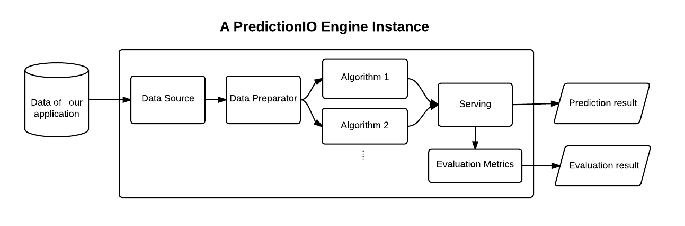

We use PredictionIO open source machine learning server to host our algorithm, which has further been implemented under the DASE architecture, which is a separation-of-concern design principle that also follows a structured approach to handling data:

Data comes in the form of “events” which are stored by the event server in the Bluemix hosted PostgreSQL database. These are automatically filtered to contain all needed properties to form a data point, and then kept as a row in the app table. The data now has to be processed. A TrainingData object containing LoginProperties (the actual event data) is passed down to the Preparator, which does the sampling and transformation of the categorical data (more details are vailable in the Algorithm | Data Preparation section) and passes it to the Algorithm class as PreparedData.
The Algorithm class is responsible with sending the PreparedData to the LibSVM algorithm together with the parameters. The result is a LibSVM Model object that encapsulates the boundary which will predict the novelty of queries that are made.[1] The predict() function takes the query data and scales it with the parameters that have been used to normalise the training data. An extra condition is added that checks if a certain number of data points is already stored so that inaccurate models will not be created when there is not sufficient data. It then sends the new query and model to the relevant LibSVM function and returns -1 for an outlier and +1 for a recognised login.
The server is configured to retrain each day at 0:00 AM using a cron job. This ensures that the model gets updated with the latest events to accurately reflect the user’s behaviour. The script cron is pointing to also redeploys the engine on port 8001 before it switches back to port 8000 where queries are listened for by default. By doing this we achieve minimal downtime for the end user.
PredictionIO supports providing an evaluation metric that quantifies the prediction accuracy. Unfortunately SVMs do not provide probability estimates, as these are calculated using an expensive five-fold cross-validation, which also needs fairly large data sets.[2]
As explained earlier, DASE allows us to easier implement the business logic. With this approach, it was also faster to identify the places in which the system caused problems, and enabled us to quickly iterate through various code changes.
Our AnomalyEngine class is extending an EngineFactory in order to define the components that the Engine will use, which in our case are: DataSource, Preparator, Algorithm, and Serving, which are also the main components of the DASE architecture. It was thus possible to initially interchange multiple implementations of these classes in order to understand how to implement the engine template.
The AnomalyEngine factory restricts the creation of the DASE components to only one object per class, thus making it easier to work with. The implementation is not multi-threaded, so we are not concerned with checking whether there is already an instance of each component.
We used getter and setter methods across all class in order to reduce the exposure of attributes, thus limiting their visibility. Another concrete example is the creation of a Parameter instance inside the Preparator class, whose attributes are only accessed in the predict() method of Algorithm.
We have successfully implemented and tested an anomaly detection engine, something that is not currently available in the PredictionIO community. The Spark ML library did not offer any one-class techniques, so we looked further to integrate an efficient library that also offered modularity in terms of customising the parameters. Instead of changing their values inside the source code, we have linked them to the engine JSON file in the root of the template to make it easier to debug anomalous fits to the data. For the purpose of demonstrating the learning feature of our project, we need a way to easily add new events to the data store and train on them. We have configured our server to connect to a Bluemix hosted database to easily test and showcase how various training situations can yield optimal results. The actual PredictionIO server and our engine are contained inside a Docker image, which has been used to generate a container that is live on IBM Bluemix. Installation instructions and the Dockerfile are available in the User manual.
We intend to submit our engine template to the template gallery. As most available templates are available in Scala, our Java implementation might represent a better starting point for newcomers to PredictionIO. In addition, our novelty detection integration with LibSVM should be of help to frequently encountered business cases.
[1] Chih-Chung Chang and Chih-Jen Lin, LIBSVM : a library for support vector machines. ACM Transactions on Intelligent Systems and Technology, 2:27:1--27:27, 2011. Software available at http://www.csie.ntu.edu.tw/~cjlin/libsvm
[2] Wu, Lin and Weng, “Probability estimates for multi-class classification by pairwise coupling”. JMLR 5:975-1005, 2004.